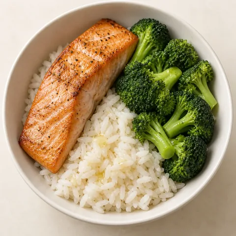
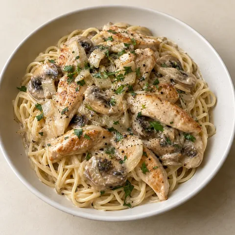
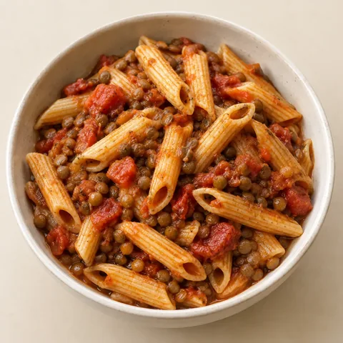

Schluss mit
„Was essen wir heute?“
Einmal Geschmack wischen, fertig ist der Wochenplan – samt Einkaufsliste für die ganze Familie.
- Budget
- Unverträglichkeiten
- Kalorienziel
- Vegan möglich



Weniger planen. Mehr Zeit für deinen Alltag.

Ausgewogen essen
Ob allein, zu zweit oder mit Familie: SmartBasket berücksichtigt unterschiedliche Portionen, Ernährungspräferenzen und gemeinsame Mahlzeiten.

Zeit sparen
Plane deine Mahlzeiten für die Woche, tausche Gerichte aus und passe deinen Plan jederzeit an.

Clever einkaufen
SmartBasket fasst alle Zutaten zusammen, berechnet die benötigten Mengen und berücksichtigt, was du bereits zu Hause hast.
Klick dich durch die Wochenplanung.
Haushalt anlegen, Budget und Unverträglichkeiten angeben und Gerichte nach Geschmack wischen. SmartBasket plant die Woche dann automatisch – du schaust rein, tauschst, was nicht passt, und bekommst den Einkaufskorb. Probier es direkt im Handy aus.
Interaktiver Entwurf. Die Oberfläche der Android-Beta kann abweichen.
Gefällt dir die Planung?
Teste SmartBasket als echte App – kostenlos in der Android-Beta.
Kostenlosen Beta-Zugang anfragenApp-Sprache: Englisch
Ein Essensplan, der sich nach dir richtet.
Nicht jeder isst dasselbe. Nicht jeder ist immer zu Hause. Und manchmal ändert sich der Plan spontan. SmartBasket hilft dir, deine Mahlzeiten flexibel zu organisieren.

Individuelle Portionen
Berücksichtige unterschiedliche Portionsgrößen für Erwachsene und Kinder.
Ernährungspräferenzen
Plane Mahlzeiten passend zu euren Vorlieben und Unverträglichkeiten.
Vorräte berücksichtigen
Trage ein, was bereits vorhanden ist, damit es nicht erneut auf deiner Einkaufsliste landet.
Flexibler Wochenplan
Passe Gerichte und Mahlzeiten an, wenn sich eure Pläne ändern.
Wer die Gerichte ausgesucht hat.
Mareike Weber, Ernährungscoach, hat die Auswahl und Zusammenstellung der Gerichte mitentwickelt: welche Mahlzeiten in den Katalog gehören, wie sie sich über den Tag verteilen und worauf es bei ausgewogenen Portionen ankommt.
Stimmen aus der Beta
Häufige Fragen
Ist SmartBasket kostenlos?
SmartBasket kann derzeit im Rahmen der Android-Beta kostenlos getestet werden. Informationen zu möglichen zukünftigen Preisen werden rechtzeitig bekannt gegeben.
Kann ich SmartBasket auch alleine nutzen?
Ja. Du kannst Mahlzeiten und Einkäufe für dich allein, zu zweit oder für einen größeren Haushalt planen.
Berücksichtigt SmartBasket Unverträglichkeiten?
Du kannst Ernährungspräferenzen und Unverträglichkeiten im Profil hinterlegen. Prüfe die Zutaten und Produktangaben trotzdem immer selbst, insbesondere bei Allergien.
Kann ich vorhandene Lebensmittel berücksichtigen?
Ja. Du kannst vorhandene Lebensmittel eintragen, damit SmartBasket sie bei der Einkaufsplanung berücksichtigt.
Wie berechnet SmartBasket die Mengen?
SmartBasket berechnet die benötigten Zutaten anhand der ausgewählten Gerichte und der geplanten Portionen. Die Mengen kannst du bei Bedarf anpassen.
Kann ich Lebensmittel direkt bestellen?
Noch nicht. SmartBasket erstellt derzeit eine Einkaufsliste, mit der du deinen Einkauf selbst erledigen kannst.
Gibt es SmartBasket für iPhone?
Aktuell befindet sich SmartBasket in der Android-Testphase. Eine iPhone-Version ist derzeit nicht verfügbar.
Wie bekomme ich Zugang zur Beta?
Fordere über das Formular deinen Beta-Zugang an. Nach Aufnahme in die Testliste erhältst du die Informationen zum Google-Play-Test per E-Mail.
Was passiert mit meinen Daten?
Informationen zur Verarbeitung deiner Daten findest du in unserer Datenschutzerklärung.
Bereit für einen einfacheren Wocheneinkauf?
Plane deine Mahlzeiten, behalte deine Vorräte im Blick und erledige deinen Einkauf mit einer fertigen Liste.
Kostenlosen Beta-Zugang anfragenSmartBasket befindet sich in der Android-Testphase und ist derzeit auf Englisch verfügbar.